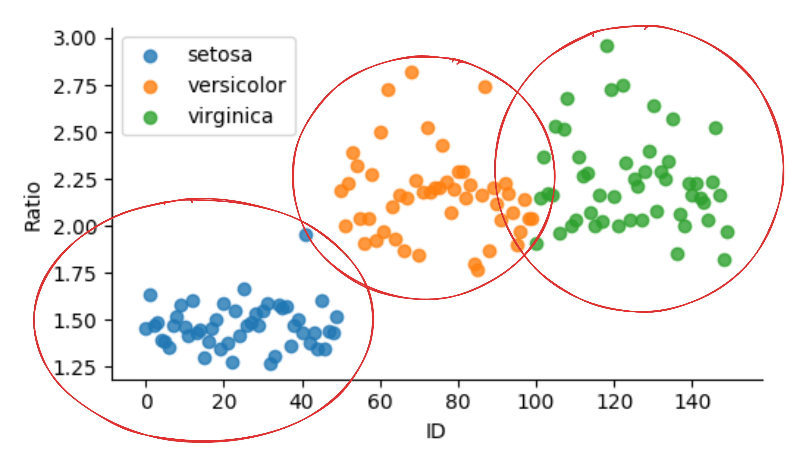
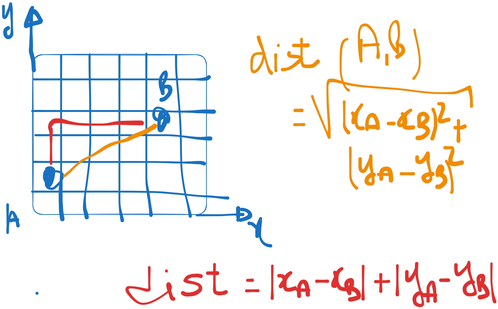
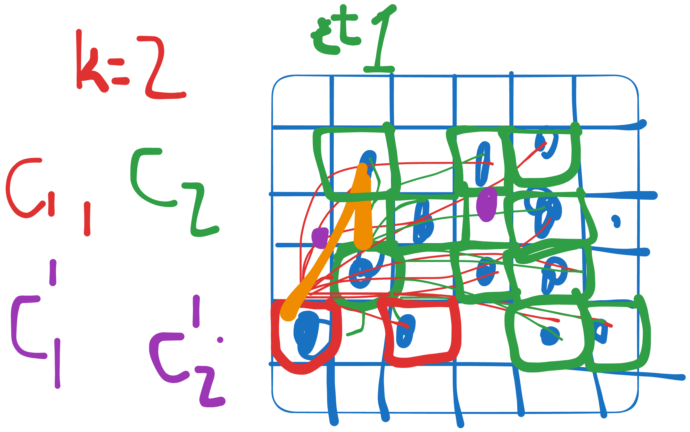
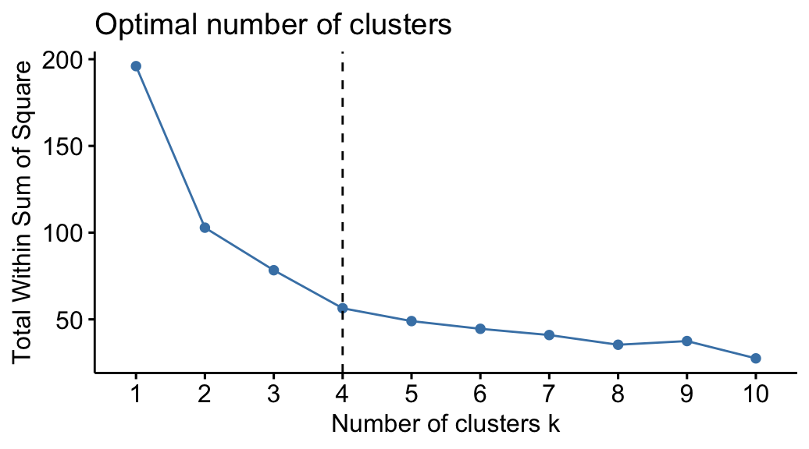

Chapitre 5 : Clustering
Le clustering consiste à regrouper les data-points (observations, lignes) similaires — sans étiquettes : c’est de l’apprentissage non supervisé.
Objectifs
À la fin de ce chapitre, vous devez pouvoir :
Définir le clustering et ses grandes catégories
Appliquer K-means (et choisir K)
Comprendre le clustering hiérarchique et le dendrogramme
1. Qu’est-ce que le clustering ?
Regrouper les observations en clusters de sorte que les éléments d’un même groupe se ressemblent (et diffèrent de ceux des autres groupes). L’enjeu est de trouver un moyen de mettre en relation les éléments (distance, densité…).
{kind=link}

Le clustering regroupe les observations similaires.
Catégories de clustering :
orienté distance : on calcule la distance qui sépare les éléments (ex. K-means) ;
orienté densité : on regroupe les zones denses (ex. DBSCAN) ;
clustering avancé (spectral, modèles de mélange, …).
{kind=link}

Clustering orienté distance.
2. K-means
Étant donné une base \(\text{Data} = X_1, X_2, \dots, X_n\), l’algorithme :
1. Choisir K (le nombre de clusters)
2. Choisir K centroïdes (par ex. K points de données comme références)
3. Assigner chaque data-point au centroïde dont il est le plus proche
(calcul de la distance à chaque centroïde)
4. Recalculer chaque centroïde = moyenne des data-points de son cluster
5. Si pas de convergence, retourner à l'étape 3
{kind=link}

K-means : assignation aux centroïdes puis recalcul, jusqu’à convergence.
2.1. Choisir K
par visualisation ;
en essayant plusieurs K et en évaluant la qualité des clusters — méthode du coude (elbow) ;
en s’appuyant sur une autre méthode (clustering hiérarchique / dendrogramme).
{kind=link}

Méthode du coude pour choisir K.
2.2. Exploiter les résultats
Prédiction : pour un nouveau point \(M(x, y)\), calculer sa distance à chaque centroïde et l’assigner au plus proche.
Domaine de couverture d’un cluster : via les écarts-types.
Clustroïde : le point de la base le plus proche du centroïde.
3. Clustering hiérarchique & dendrogramme
Le clustering hiérarchique construit une hiérarchie de regroupements : agglomératif (ascendant : on part de chaque point comme un cluster, puis on fusionne les plus proches) ou divisif (descendant). Le résultat se visualise par un dendrogramme : en le « coupant » à une certaine hauteur, on obtient un nombre de clusters — ce qui aide notamment à choisir le K de K-means.
Exercice
Voir le TP K-means : implémentez K-means sur un jeu assigné, faites varier K et déterminez le K optimal.